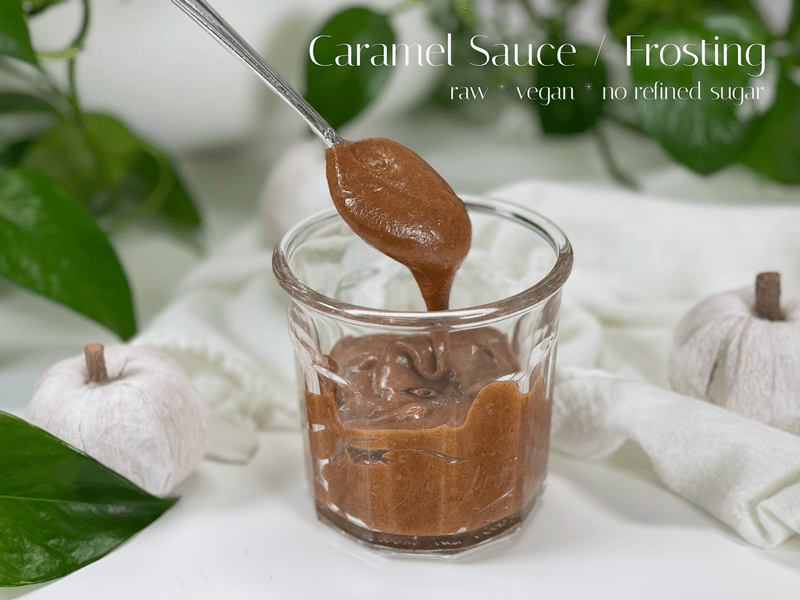
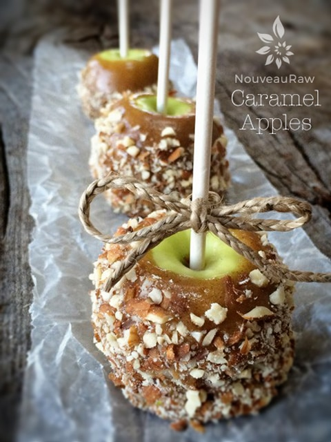

Caramel Sauce / Frosting
~ raw, vegan, gluten-free ~
I bet if you are one who watches what they eat (for health reasons, weight management, etc.) the thought of enjoying caramel sauce is just flat off the radar. The thought of eating, let alone enjoying, a dessert that contains caramel is usually considered a gut-busting, nap-inducing, Instagram-worthy… better break out the stretchy pants type of dessert. But not this one… as long as you enjoy it within moderation. Yea, I know. Nobody wants to hear that word. But let’s be realistic.

If we are going to eat sweet treats, then let’s make each ingredient count. So, without invitation, I am going to dive right in. Almond butter contains healthy fats, fiber, protein, magnesium, and vitamin E. Maple syrup contains calcium, iron, magnesium, phosphorus sodium, potassium, zinc, thiamin, riboflavin, niacin, and B6. And our last major contender in this recipe are dates… good ole Medjool dates are considered lower glycemic all because of their high fiber content. I want you to feel good about the foods that you put into your tummy. I don’t want you to eat with regret and fear. Those emotions will negate any health benefits of the foods you eat.
So, onward… I made this sauce to combine it with another recipe that I was creating. I ended up with a small bowls worth leftover. The minute I turned my back, the bowl disappeared along with an apple. I found Bob in the corner, dipping his apple slices into the caramel sauce. He was in another world, a world that only consisted of caramel, apples, and himself. I decided to give him space and allow him to savor his treat. He polished off the bowl, patted his tummy, and moaned in pleasure. I took that as a good sign…this recipe is a keeper!
Ingredients:
Yields 1 1/2 cups
Preparation:
- Place the almond butter, maple syrup, date paste, vanilla, and salt in a high-powered blender and process until smooth.
- Stop occasionally to scrape the sides down.
- Store in the fridge in a glass container. Good for approximately 2 weeks.
- To soften, leave it out at room temperature for a few hours.
Hungry for Raw Caramel Apples? Click here.

© AmieSue.com